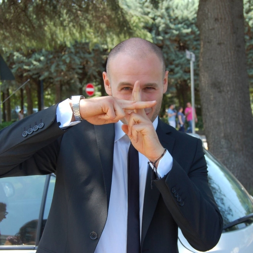

I was born in Naples in 1986, on a cold winter morning. I'm a computer scientist specialized in desktop applications for Windows and Linux. Since childhood I have always had a huge passion for science, physics and math, I'm also fond of European literature of the 19th and 20th centuries. I practice volleyball, swimming, bodybuilding, running and cycling at amateur level. I'm very competitive and I never give up. My dream is to become a video game programmer.